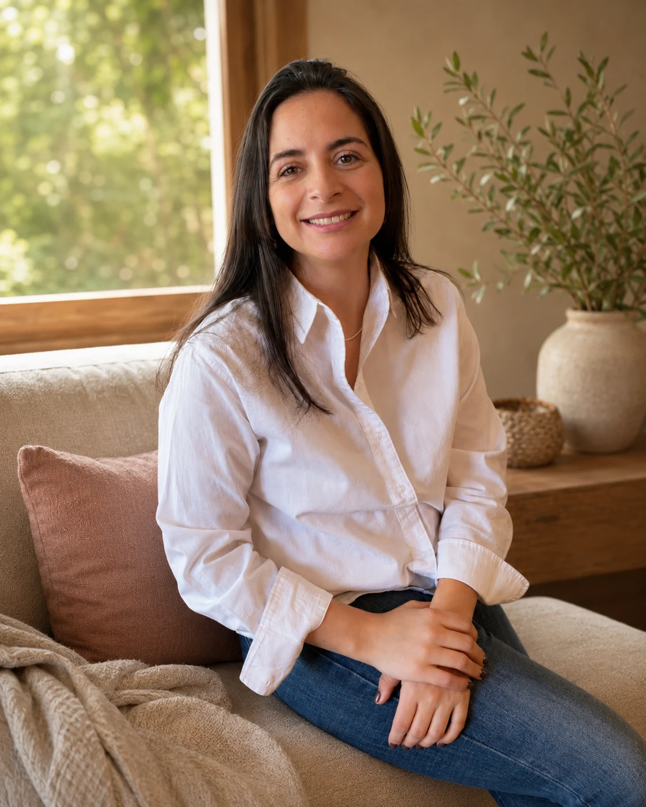

Psicología perinatal para el embarazo, el posparto y la transición a la maternidad.
Un espacio clínico especializado para entender lo que estás viviendo y abordarlo con claridad, cuidado y responsabilidad profesional. Atención online para mujeres en Chile.
Psicóloga clínica especializada en psicología perinatal
- Experiencia clínica6+ años acompañando mujeres en etapa perinatal
- Universidad de ZaragozaExperto Universitario en Salud Mental Reproductiva y Perinatal
- Superintendencia de SaludRegistro 598177
- Colegio de Psicólogos CLRegistro 12.847
Cuatro espacios
de trabajo clínico.
-
Embarazo y ansiedad perinatal
Miedos, preocupaciones anticipatorias y síntomas ansiosos durante la gestación.
Leer sobre ansiedad perinatal → -
Posparto y salud mental materna
Depresión posparto, cambios emocionales tras el nacimiento y la construcción del vínculo con tu bebé.
Leer sobre depresión posparto → -
Matrescencia y transición a la maternidad
Cambios de identidad, pareja, rutina y cuerpo. Un espacio para poner palabras a lo que pocas veces se dice en voz alta.
Ver en servicios → -
Duelo gestacional y perinatal
Acompañamiento en pérdidas durante el embarazo, al nacer o en los primeros meses.
Ver en servicios →

Psicóloga clínica especializada
en salud mental perinatal.
Acompaño a mujeres durante el embarazo, el posparto y la construcción de su maternidad, con evidencia clínica actualizada y una escucha sin apuro.
Conocer mi enfoqueUn proceso claro,
sin sorpresas.
-
Reserva
Revisas los horarios reservables en el calendario y eliges el día y la hora que se ajusten a tu rutina.
-
Primera sesión
Una conversación amplia de 50 minutos para conocerte, entender qué estás viviendo y definir un camino de trabajo.
-
Plan de trabajo
Te propongo un encuadre de trabajo: frecuencia, enfoque y objetivos. Seguimos desde ahí, con un seguimiento cuidado y flexible.
- Duración
- 50 min
- Modalidad
- Online
- Valor sesión
- $50.000
- Isapre
- Reembolso según plan
¿Necesito un diagnóstico para consultar?
¿Cómo es la primera sesión?
¿La atención es online?
Importante. Si estás en crisis o con pensamientos de hacerte daño, llama a *4141 (Línea de Prevención del Suicidio) o acude al servicio de urgencia más cercano.
Dar el primer paso
también es cuidarte.
Reserva tu primera sesión: 50 minutos por videollamada, en un espacio privado. Al final decidimos juntas cómo continuar.